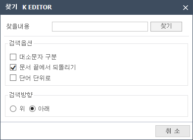
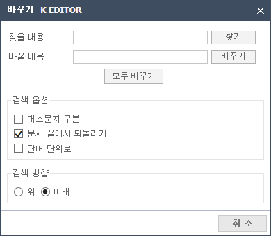

편집 작업을 취소하거나 취소했던 작업을 다시 원래대로 실행합니다.
가장 최근에 한 작업을 취소하고 이전의 상태로 되돌립니다.
선택할 때마다 가장 최근에 한 작업이 한 단계씩 취소됩니다.
문서를 열고 아무런 작업도 하지 않았거나 진행한 작업을 모두 돌이킨 후에는 되돌리기를 할 수 없습니다.
취소했던 편집 작업을 다시 원래대로 실행합니다.
가장 최근에 돌이켰던 작업이 한 단계씩 실행됩니다.
더 이상 취소할 되돌리기 작업이 없다면 아무런 일도 일어나지 않습니다.
블록으로 선택되어 있는 부분이 클립보드로 복사되고, 문서에도 그대로 남아있습니다.
복사한 부분은 클립보드에 보관되어 있으므로 다른 곳에 붙여 넣을 수 있습니다.
클립보드에 새로운 내용을 복사하면 이전에 보관되어 있던 내용은 사라집니다.
블록으로 선택되어 있는 부분이 사라지면서 클립보드로 복사됩니다.
잘라낸 부분은 클립보드에 보관되어 있으므로 다른 곳에 붙여 넣을 수 있습니다.
클립보드에 새로운 내용을 복사하면 이전에 보관되어 있던 내용은 사라집니다.
클립보드에 보관되어 있는 내용이 커서가 있는 위치에 삽입합니다.
붙이기를 하려면 먼저 자르기나 복사하기를 해야 합니다.
커서 위치에 상관없이 현재 편집 중인 문서의 모든 내용이 블록으로 선택됩니다.
이 상태에서 복사하기, 자르기, 지우기, 붙이기 등의 편집 작업을 할 수 있습니다.
현재 작업중인 Editor 의 문자를 찾습니다.

01Editor에서 찾을 내용을 입력합니다.
02검색 옵션을 선택합니다.
03검색 방향을 선택합니다.
04찾기 버튼을 클릭하여 문자열을 찾습니다.
현재 작업중인 Editor에서 찾은 단어를 대체 문자로 변경합니다.

01Editor에서 찾을 내용을 입력합니다.
02바꿀 내용을 입력합니다.
03검색 옵션을 선택합니다.(기본 선택: 문서 끝에서 되돌리기)
04검색 방향을 선택합니다.(기본 선택: 아래)
05찾기 버튼을 클릭하면 문자열을 찾습니다.
06바꾸기 버튼을 클릭하면 찾은 문자열을 바꿀문자열로 바꿉니다.
07모두바꾸기 버튼을 클릭하면 Editor전체에서 찾을 내용을 바꿀 내용으로 바꿉니다.